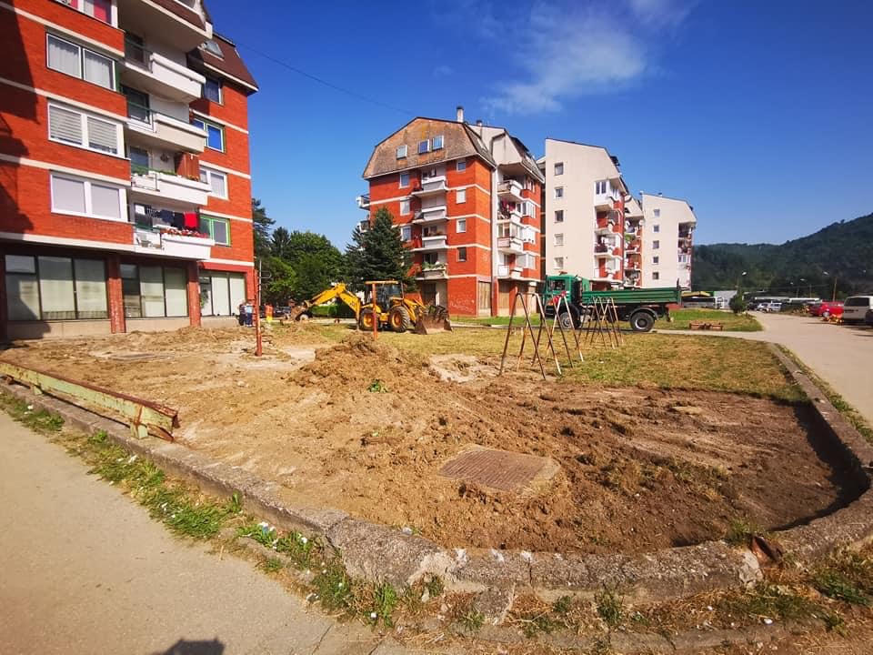
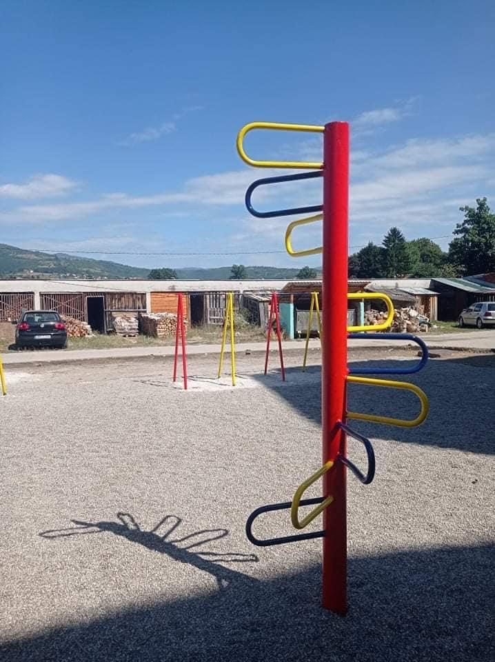
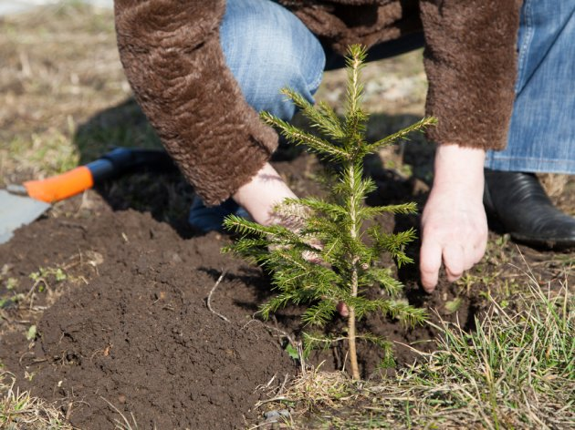

Projekti
TVORNICA SMJEHA
Projekat "Tvornica smjeha" je jedan od projekata realizovan od strane Omladinske banke. Sve je krenulo tako što sam odlučio napisati projekat uređenja dječijeg dvorišta, koje se nalazilo u jako lošem stanju. Projekat je prošao, a kako su se radovi primicali tako sam uspio obezbijediti i dodatna sredstva i donacije od stanara iz kompleksa crvenih lamela i firmi.
Sredstvima Omladinske banke i raznim donacijama, uz učešće određenog broja stanara, željom i voljom, zarasla podloga je zamijenjena riječnim pjeskom oko kojeg će biti travnati pojas. Postojeće konstrukcije su prefarbane, nabavljene kvalitetne ljulje, kupljena je nova klackalica kao i vrteška za djecu.
U izradi je ograda koja će osiguravati djecu od vozila koja prilaze zgradama, a naručene su i kućica za igru i tobogan.
Sredstvima Omladinske banke i raznim donacijama, uz učešće određenog broja stanara, željom i voljom, zarasla podloga je zamijenjena riječnim pjeskom oko kojeg će biti travnati pojas. Postojeće konstrukcije su prefarbane, nabavljene kvalitetne ljulje, kupljena je nova klackalica kao i vrteška za djecu.
U izradi je ograda koja će osiguravati djecu od vozila koja prilaze zgradama, a naručene su i kućica za igru i tobogan.


POŠUMLJAVANJE NA KALINU
ŠPD "Srednjobosanske šume / Šume Središnje Bosne" d.o.o Donji Vakuf organizovale su pošumljavanje na rejonu Radovana - lokacija Kalin sa ciljem sadnje 10 000 sadnica za jedan. Vrijednim zaposlenicima i volonterima, među kojima sam i ja bio, na ruku je išlo i prelijepo oktobarsko vrijeme što se vidi na priloženoj fotografiji.
